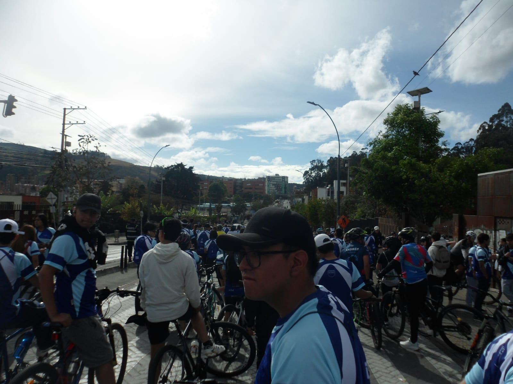

reflexión
1. ¿Que experiencia marco? :
La experiencia que marcó fue el bici-paseo ya que contiene un mensaje importante que incentiva a cuidar del planeta, detallando la experiencia personal fue un rato agradable de compartir una actividad con muchas personas, la cual ayudo a mi estado físico y mental.
2. ¿Que te llevas de la universidad? :
Diría que me llevo una impresión muy positiva, realmente este tipo de eventos no son comúnmente realizados por otras universidades, el enfoque a no simplemente compartir conocimiento si no llevarlo más haya que es el apartado social y cultural, lo anteriormente mencionado es propio de una estructura muy completa de plan de semestre.
3. ¿ Cómo aportaras a tu comunidad? :
El aporte que hago es dar mi experiencia con la parte de lo importante que es compatir experiencias y no querer optimizar siempre, comunicar lo bueno de eso así como lo del bici-paseo
Galería de Actividades

Bici-paseo
esto fue el bici paseo, una experiencia muy satisfactoria por el tema general y la experiencia vivida ,(la imagen es de mi perspectiva observando el panorama).

Cineforo
aquí en el cineforo mirando el contenido dado pero también conociendo por primera vez esa sala, la cual es muy cómoda, por lo tanto esta actividad sirvió para querer indagar los espacios de la universidad aún no recorridos.
Departamento de Idiomas
aquí estoy en el evento organizado por el departamento de idiomas enfocado en inglés mirando cronológicamente el programa preparado, a su vez participando en las actividades y eventos que transcurrían, una experiencia buena para reconocer y mirar lo importante que es el idioma global inglés.